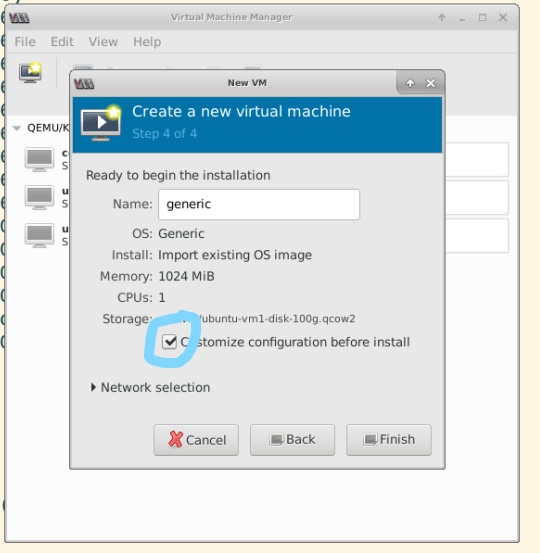
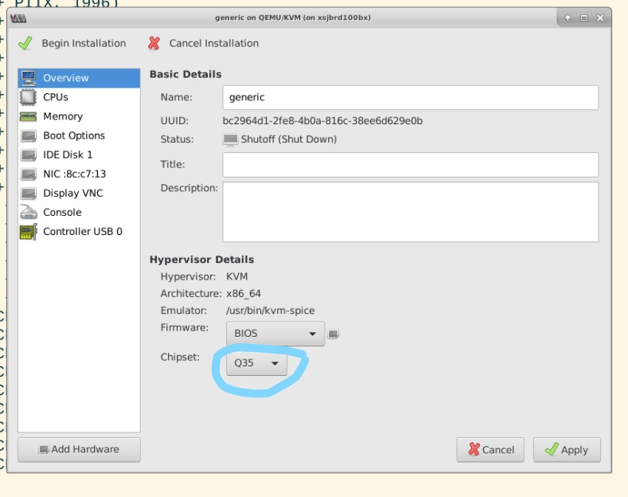
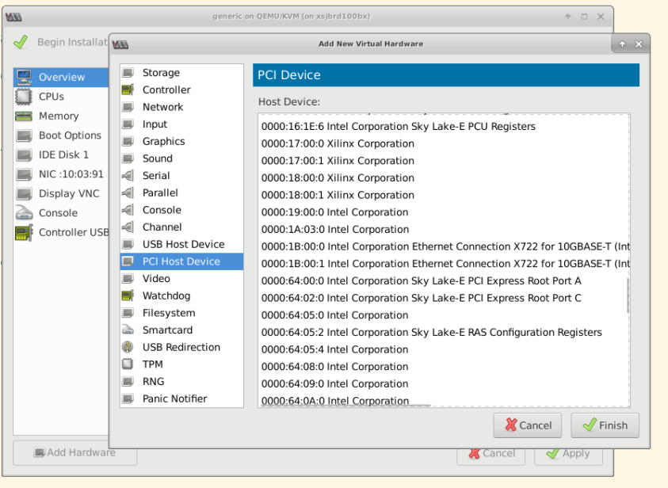

Accessing vsec within VM¶
Background¶
vsec is introduced to support raptor based shell design. It is in the extended config space of the pcie node.
In cloud environment where the pcie device is passed-through to the VM, if the emulated chipset doesn’t support pcie, then the extended config space can’t be accessed. Those cards with raptor based shell will not working then.
By default, the kvm will choose chipset ‘i440’, which doesn’t have pcie support. This post will show on Linux how to choose a newer type of chipset – ‘q35’, which has pcie support.
Creating VM with virt-manager¶

run
qemu-system-x86_64 -machine help, and see q35 is supported. otherwise, it means the qemu version is too old. Please upgrade qemu to newer versionstart virt-manager, during VM creation, make sure choose ‘Customize configuration before install’

Before ‘Begin installation’, make sure the chipset is ‘q35’
Note: If you already created the VM with chipset ‘i440’, you can manually edit the XML config file of the VM to change the chipset to ‘q35’, there are quite several parts need to change.
Pass through FPGA user PF to VM¶
You can pass-through the FPGA do vm during vm creation. In the ‘Customize configuration’ window, add FPGA user PF
You can also do it after the vm is created.
pci path through user PF to kvm guest¶
Host># virsh edit name_of_vm
#add following to the definition xml file of the vm
<hostdev mode='subsystem' type='pci' managed='yes'>
<driver name='vfio'/>
<source>
<address domain='0x0000' bus='0x03' slot='0x00' function='0x1'/>
</source>
<address type='pci' domain='0x0000' bus='0x00' slot='0x09' function='0x0'/>
</hostdev>
Here, domain='0x0000' bus='0x03' slot='0x00' function='0x1' is the dbdf of the user PF in host. while domain='0x0000' bus='0x00' slot='0x09' function='0x0' is the dbdf info assigned in vm. we set managed = 'yes', so that when vm gets started, the PF(s) are automatically assigned to vm and when vm is destroyed, the vm is reassigned back to host.
If want to do hot-plug, we should not set manage = 'yes'
More details, pls refer